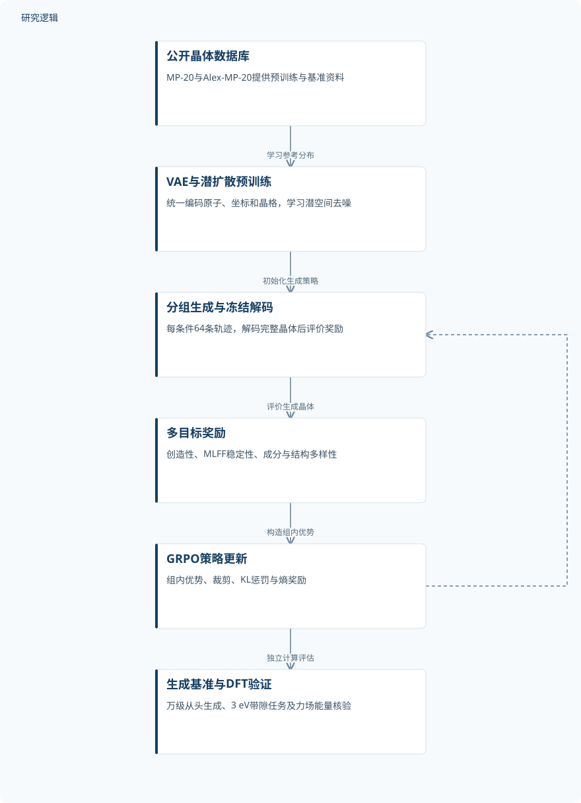
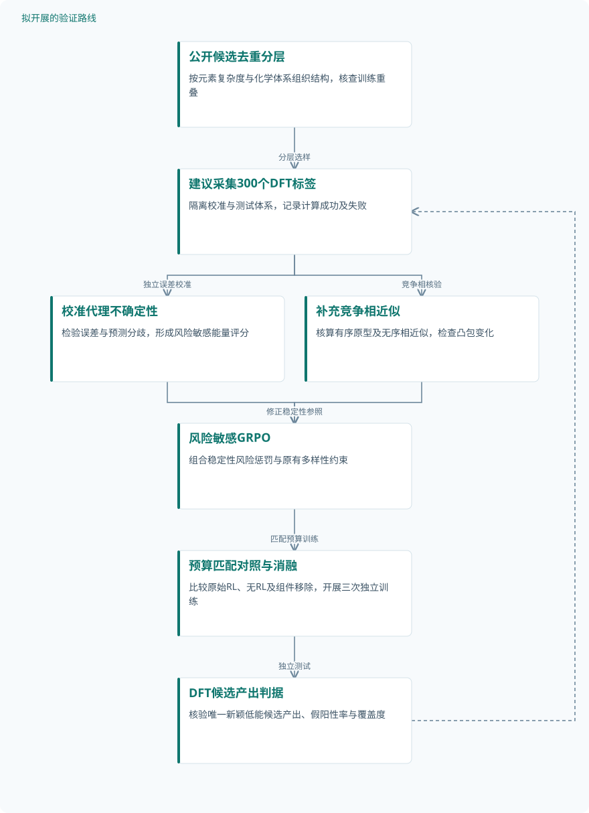

论文精读
通过强化学习引导生成模型发现多样且新颖的晶体
Guiding generative models to uncover diverse and novel crystals via reinforcement learning
精读更新 2026-10-03 21:32 · 依据论文全文整理
晶体生成模型能否不再只复现数据库中的常见结构，而是找到新颖、多样且热力学可行的候选？Park与Walsh提出Chemeleon2，用强化学习重塑潜扩散模型的探索方向，将创造性、稳定性与多样性纳入生成目标。其价值不仅在于提高候选产出率，更在于揭示一个关键边界：奖励驱动的“新材料发现”，仍须接受独立能量验证、结构去重和竞争相完整性的检验。
文章目录
高概率晶体，不一定是值得发现的晶体
似然最大化鼓励模型学习已有数据库的统计规律，材料发现却希望进入罕见元素组合和非常规配位所在的稀疏区域。新颖性与稳定性因此容易冲突，但这种关联不是自然定律，而是训练分布与搜索目标共同造成的困难。
本文将问题从“能否生成合理晶体”推进到“怎样提高有用新候选的产出率”。这一转向值得重视：探索范围扩大并不自动意味着发现质量提高，评价必须同时检查能量、重复结构和相对参考数据库的新颖性。
把潜空间去噪变成奖励驱动的决策过程
Chemeleon2以C=(A,X,L)表示原子种类、分数坐标和晶格，先用VAE将异质变量压缩到潜维度为8的连续空间，再训练DiT预测噪声。预训练采用1,000步DDPM，推理采用50步DDIM；随机平移和旋转用于数据增强，但不会增加独立晶体数量。
强化学习将逐步去噪视为策略动作，完整晶体解码后才获得终端奖励，预训练VAE解码器保持冻结。GRPO对同一条件生成64条轨迹，以组内奖励均值和标准差构造优势；每批5个条件对应320个结构，并通过裁剪、KL惩罚和熵奖励限制更新与重复生成。
创造性结合StructureMatcher判定与平均最小距离，稳定性由MACE-MPA-0估计0 K凸包上方能量，多样性则衡量样本对批次成分和结构分布的边际贡献。稳定性原始奖励为−clip(E_hull^MLFF,0,1)，与统一缩放至0至1的描述尚有衔接缺项；创造性权重也不能由给定文字唯一确认，影响精确复现。
Chemeleon2：从数据库学习到奖励引导探索


实线流程概括原研究；DFT用于计算验证，图中不包含实验合成或后续拟议改进。
下载 SVG图示关系说明
实线表示相邻阶段的信息流，虚线表示跨阶段联系或反馈。
公开晶体数据库 → VAE与潜扩散预训练：学习参考分布；VAE与潜扩散预训练 → 分组生成与冻结解码：初始化生成策略；分组生成与冻结解码 → 多目标奖励：评价生成晶体；多目标奖励 → GRPO策略更新：构造组内优势；GRPO策略更新 → 分组生成与冻结解码：迭代探索；GRPO策略更新 → 生成基准与DFT验证：独立计算评估
从万级生成基准到3 eV带隙的DFT检验
研究使用公开的MP-20与Alex-MP-20，每个模型从头生成10,000个结构，仅按训练分布指定晶胞原子数，不预设成分，也不进行几何优化。比较包含无RL的Chemeleon2、MatterGen、Chemeleon1、DiffCSP和ADiT；这些是计算生成样本，不是独立实物试件，训练划分比例、独立运行次数和增强数量未报告。
mSUN统计同时满足亚稳、唯一和新颖的结构比例，其中亚稳阈值为E_hull^MLFF<0.1 eV per atom。组成有效性采用SMACT与ICSD24氧化态集合；覆盖度定义为1/(1+FMD)，衡量潜空间分布对齐，而不能直接证明分布外发现。
性质任务使用43,295个带隙值，各方法生成512个结构，目标为原文定义的分布外3 eV，并比较CFG、CFG结合LoRA和RL。验证包含静态及弛豫后DFT带隙，另以1,000个采样结构检查力场凸包能量；采用VASP 5.4.0和PBE，但弛豫有效样本数、代理精度与独立重复未报告。
| 验证任务 | 样本与规模 | 主要结果 |
|---|---|---|
| MP-20与Alex-MP-20从头生成基准 | 每模型生成10,000个结构，非独立实物试件；独立训练次数、去重后数量及增强数量未报告。 | Alex-MP-20：mSUN 15.9%→61.3%，MatterGen 41.0%；MP-20：7.6%→26.0%，MatterGen 24.5%。Alex-MP-20唯一性99.4%→88.7%。 |
| 3 eV带隙引导生成与DFT弛豫验证 | CFG、CFG结合LoRA、RL各生成512个结构；实际弛豫成功、失败及有效样本数未报告。 | 静态RL mSUN为45.3%，目标区间内有82个mSUN结构；CFG接近零、LoRA低于3%。弛豫后RL mSUN为60.8%，亚稳性85.5%。 |
| 策略优化与多样性奖励消融 | GRPO每条件64条轨迹、每更新320个生成结构；各消融总样本数与独立运行数未报告。 | GRPO方差较低；移除多样性奖励导致模式坍塌。权重提高后覆盖度40.1%→71.2%，亚稳性40.9%→32.2%，mSUN相近。 |
| MACE-MPA-0凸包能量的DFT交叉验证 | 1,000个采样结构；去重情况、化学体系分布、训练重叠及独立性未报告。 | 作者报告两者接近，亚稳窗口内预测误差始终低于0.10 eV per atom；未提供进一步误差统计。 |
展开数据来源、分组、对照与验证边界
MP-20与Alex-MP-20从头生成基准
数据来源。MP-20来自cdvae仓库，Alex-MP-20来自MatterGen仓库；完整训练数据规模未报告。
分组与工况。两种数据集分别比较RL前后与外部模型；仅条件化晶胞原子数，全部生成态评价，不弛豫。
数据划分。训练、验证、测试比例及划分方法未报告；新颖性针对参考结构集，用默认StructureMatcher容差判断。
对照与消融。无RL的Chemeleon2、MatterGen、Chemeleon1、DiffCSP及ADiT；Chemeleon1移除文本编码器。
评价指标。mSUN、唯一性、新颖性、组成有效性和1/(1+FMD)；亚稳阈值为0.1 eV per atom。
验证边界。缺少独立重复与不确定性；MLFF及0 K凸包指标不能证明可合成性，高阶体系竞争相可能不完整。
3 eV带隙引导生成与DFT弛豫验证
数据来源。Alex-MP-20中的43,295个带隙值；RL带隙代理使用预训练VAE结构特征，代理精度未报告。
分组与工况。统一目标为3 eV，命中区间2.7–3.3 eV；先评价未弛豫结构，再检查DFT弛豫后的性质。
数据划分。带隙代理与生成模型的训练、验证、测试划分未报告；43,295个标签不能直接等同独立晶体数。
对照与消融。CFG及CFG结合LoRA；未报告代理模型、奖励分项的受控消融与独立重复。
评价指标。PBE-DFT带隙、mSUN、目标区间内mSUN数量及弛豫前后相关性；相关系数未报告。
验证边界。缺少弛豫分母、弛豫后命中数及基线完整结果；PBE协议对磁性和强关联材料存在局限。
策略优化与多样性奖励消融
数据来源。算法及移除奖励消融的数据集对应关系未报告；结构多样性权重对照明确采用MP-20。
分组与工况。GRPO对照REINFORCE；完整奖励对照移除多样性项；另比较结构多样性权重0.1与1.0。
数据划分。消融训练与评价划分未报告；不同曲线训练长度不同，不能认定预算完全匹配。
对照与消融。标准REINFORCE、无多样性奖励策略，以及结构多样性权重0.1的默认配置。
评价指标。奖励、优势、梯度方差、mSUN、覆盖度及亚稳性；曲线阴影是滚动标准差，不是跨运行置信区间。
验证边界。未报告显著性、独立重复及完整匹配配置；复杂多元体系可能利用相图稀疏获得偏高奖励。
MACE-MPA-0凸包能量的DFT交叉验证
数据来源。采样晶体与Materials Project竞争相；参考形成能采用未校正GGA/GGA+U，DFT使用VASP与PBE。
分组与工况。同一采样结构分别进行DFT与MLFF能量计算；报告结论限定于亚稳窗口。
数据划分。采样结构与力场训练数据的重叠检查、独立测试划分及窗口外分组未报告。
对照与消融。DFT作为MACE-MPA-0能量预测参照；其他机器学习力场的对照未报告。
评价指标。凸包上方能量预测误差，单位eV per atom；误差汇总定义及分布未报告。
验证边界。缺少误差分布与跨体系表现；0 K评价忽略有限温度，对磁性和强关联体系的适用性受限。
候选质量明显改善，但稳定性与多样性仍需拆开看
Alex-MP-20上，RL使mSUN从15.9%升至61.3%，超过MatterGen的41.0%；MP-20上则从7.6%升至26.0%，MatterGen为24.5%。不过Alex-MP-20的唯一性从99.4%降至88.7%，说明收益伴随重复生成，不能表述为所有质量维度同步改善。
带隙任务中，RL静态mSUN为45.3%，512个初始样本中82个同时满足mSUN与2.7–3.3 eV目标区间；弛豫后mSUN为60.8%、亚稳性为85.5%。这些计算支持性质控制，但缺少弛豫分母和重复统计，尚不能量化稳健性，也没有实验合成验证。
消融显示移除多样性奖励会发生严重模式坍塌；将其权重从0.1提高至1.0，覆盖度由40.1%升至71.2%，亚稳性却由40.9%降至32.2%。本站判断，最值得追问的是奖励是否识别真实新相：稀疏竞争相、无序固溶体的有序超胞伪影及有限温度缺失，都可能使高分候选被高估。
从这篇论文走向下一项研究
以下为结合研究方向提出的候选方案，实验设计与预期目标有待验证。
用不确定性与竞争相补全约束稳定性奖励
问题与短板。低凸包能量可能来自力场外推误差或竞争相缺失，尤其是复杂多元与无序体系。应先区分真实低能候选和参考数据库不完整造成的高分结构。
改进机制。在稳定性奖励中加入经独立DFT校准的不确定性惩罚，并对高分候选补充有序原型与无序竞争相近似。优先核算奖励高但预测分歧大的结构，迭代更新代理。
候选创新。候选创新是把风险敏感奖励、竞争相补全与批次多样性约束联合起来，而非提出全新的强化学习算法。检验这一组合能否减少代理高分、DFT失效的候选。
数据与实验设计。建议设计：利用公开结构与采样结果，按二至四元、五元及以上分层，选300个去重候选采集DFT标签。按化学体系隔离校准与测试，并报告三次独立训练及计算失败。
对照与消融。以原始GRPO和无RL模型为基线，匹配生成量与DFT预算；分别移除不确定性惩罚、竞争相补全和多样性约束。公开来源不明或训练重叠的样本应单独统计。
成功判据。预先约定以每百次DFT获得的唯一、新颖且低凸包能量候选数为主指标，同时检查代理假阳性率和覆盖度。成功须跨体系改善，而非仅提高训练奖励。
风险与替代方案。竞争相枚举与DFT成本可能过高，无序近似也可能引入偏差。可先限定三四元体系，用分层抽样开展小规模核验；即使通过计算，也只称候选，不宣称可合成。
以原型隔离测试检验弛豫后性质控制
问题与短板。现有带隙结果缺少明确划分、弛豫分母及代理校准，难以区分新原型泛化与已知结构邻域搜索。需要把目标命中、结构有效性和新颖性同时纳入独立评价。
改进机制。按结构原型及化学体系隔离训练测试，建立弛豫后带隙代理，并让奖励联合考虑目标偏差、能量和不确定性。对几何变化敏感的候选增加静态—弛豫一致性检查。
候选创新。拟议创新是评估隔离与弛豫感知奖励的组合，而不是把性质强化学习视为首创。已检索SPARC与PLaID++摘要涉及对称性或奖励设计，但不能据摘要推断其完整配置。
数据与实验设计。建议设计：从公开带隙资料构建去重分组，设置2、3、4 eV目标，每方法每目标生成512个结构。建议分层抽取各组64个做DFT弛豫，新增标签需计算采集并公开失败记录。
对照与消融。对照CFG、CFG结合LoRA和原始RL，匹配计算预算；消融弛豫感知项、不确定性项与原型隔离。LeMat-GenBench摘要提示统一评价的重要性，可参考其思路但须核对实现。
成功判据。以弛豫后同时满足目标区间、唯一性、新颖性与亚稳阈值的产出率为核心，并报告带隙误差和置信区间。三次独立训练均改善且不牺牲覆盖度，才支持机制有效。
风险与替代方案。PBE带隙偏差与小样本弛豫可能掩盖真实收益，可先采用一致计算协议，再对精选候选补充更高精度计算。若目标外推失败，应缩小目标范围并如实报告适用边界。
拟议路线：降低稳定性奖励的代理假阳性


对应第一条研究建议；样本数、分组与改进机制均为建议设计，不代表已经完成或获得收益。
下载 SVG图示关系说明
实线表示相邻阶段的信息流，虚线表示跨阶段联系或反馈。
公开候选去重分层 → 建议采集300个DFT标签：分层选样；建议采集300个DFT标签 → 校准代理不确定性：独立误差校准；建议采集300个DFT标签 → 补充竞争相近似：竞争相核验；校准代理不确定性 → 风险敏感GRPO：加入风险惩罚；补充竞争相近似 → 风险敏感GRPO：修正稳定性参照；风险敏感GRPO → 预算匹配对照与消融：匹配预算训练；预算匹配对照与消融 → DFT候选产出判据：独立测试；DFT候选产出判据 → 建议采集300个DFT标签：优先核算疑难候选